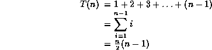

| Data Structures and Algorithms |
| 7 Sorting |
Sorting is one of the most important operations performed by computers. In the days of magnetic tape storage before modern data-bases, it was almost certainly the most common operation performed by computers as most "database" updating was done by sorting transactions and merging them with a master file. It's still important for presentation of data extracted from databases: most people prefer to get reports sorted into some relevant order before wading through pages of data!
/* Insertion sort for integers */
void insertion( int a[], int n ) {
/* Pre-condition: a contains n items to be sorted */
int i, j, v;
/* Initially, the first item is considered 'sorted' */
/* i divides a into a sorted region, x<i, and an
unsorted one, x >= i */
for(i=1;i<n;i++) {
/* Select the item at the beginning of the
as yet unsorted section */
v = a[i];
/* Work backwards through the array, finding where v
should go */
j = i;
/* If this element is greater than v,
move it up one */
while ( a[j-1] > v ) {
a[j] = a[j-1]; j = j-1;
if ( j <= 0 ) break;
}
/* Stopped when a[j-1] <= v, so put v at position j */
a[j] = v;
}
}
|
Insertion Sort Animation This animation was written by Woi Ang. |
|
Please email comments to: morris@ee.uwa.edu.au |
/* Bubble sort for integers */
#define SWAP(a,b) { int t; t=a; a=b; b=t; }
void bubble( int a[], int n )
/* Pre-condition: a contains n items to be sorted */
{
int i, j;
/* Make n passes through the array */
for(i=0;i<n;i++)
{
/* From the first element to the end
of the unsorted section */
for(j=1;j<(n-i);j++)
{
/* If adjacent items are out of order, swap them */
if( a[j-1]>a[j] ) SWAP(a[j-1],a[j]);
}
}
}
or O(n2) - but we already know we can use heaps to get an O(n logn) algorithm. Thus these algorithms are only suitable for small problems where their simple code makes them faster than the more complex code of the O(n logn) algorithm. As a rule of thumb, expect to find an O(n logn) algorithm faster for n>10 - but the exact value depends very much on individual machines!.
They can be used to squeeze a little bit more performance out of fast sort algorithms - see later.
Key terms |
|
Continue on to Heap Sort Back to the Table of Contents |